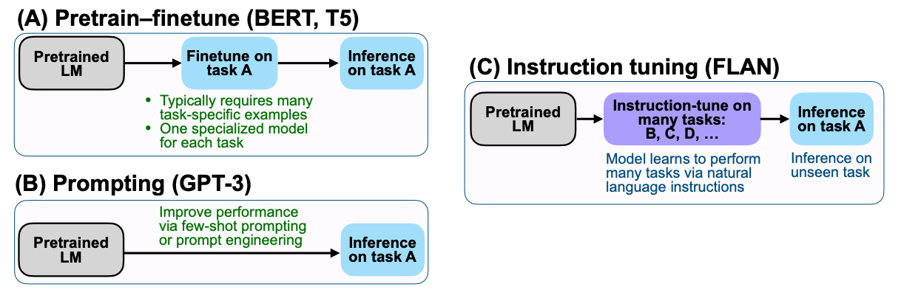
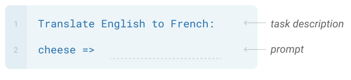
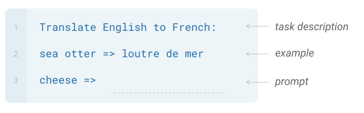
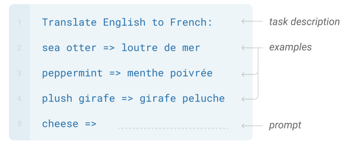
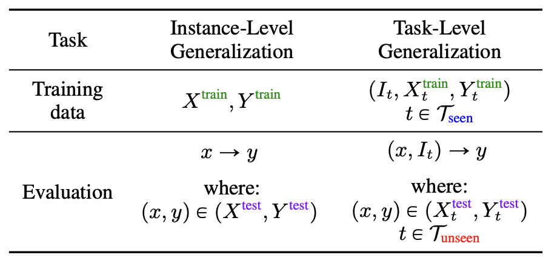
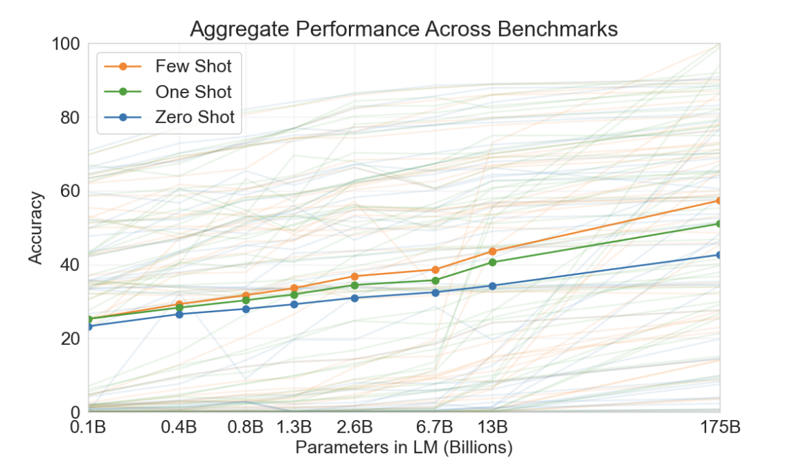
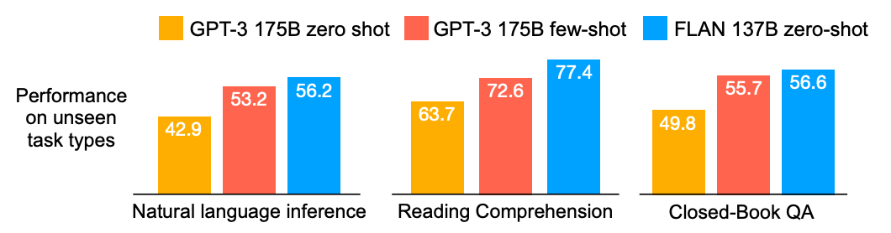
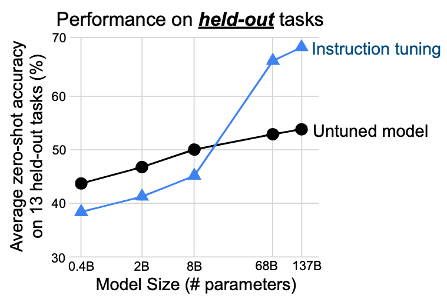
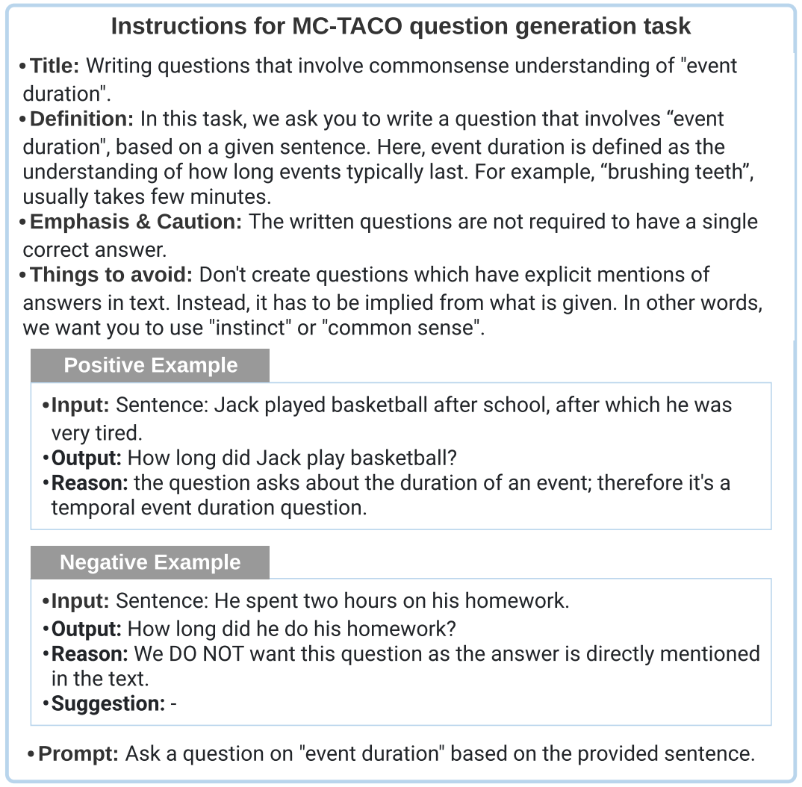
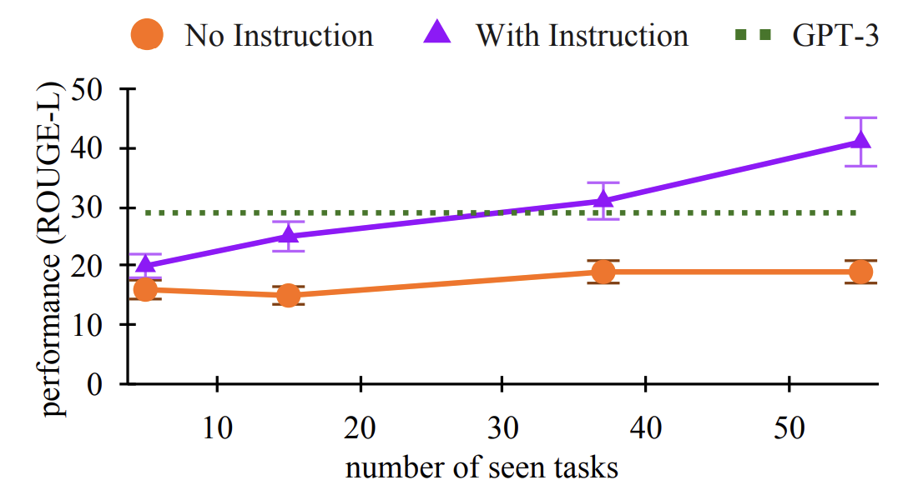

While I try my best to summarize and connect the papers below, this post won’t come close to the joy of reading and understanding these papers yourself. I highly recommend it! 🙂
Note: It is entirely possible that I (unintentionally) skip over important papers or get something wrong. Please help me in keeping this resource as accurate as possible, by reaching out to me via Twitter and I will update this appropriately. Thanks and enjoy the journey! 😀
Instruction Tuning
Introduction
Instruction Tuning can simply be defined as the task of teaching a model to follow instructions in order to enable it to perform unseen tasks at test time.
Instruction Tuning is a simple method that combines appealing aspects of both the pretrain–finetune and prompting paradigms by using supervision via finetuning to improve language model’s responses to inference-time text interactions

n-Shot Setting
As opposed to fine-tuning which requires parameter updates to the model, n-Shot techniques don’t involve gradient updates. From Brown et al, the three broad categories in decreasing order of difficulty are :
| Setting | Example |
|---|---|
| Zero-Shot(0S) |  |
| One-Shot(1S) |  |
| Few-Shot (FS) |  |
Generalization
Before we go down the rabbit hole, Mishra et al provide a useful definition to set the tone for what multi-task generalization means :
Instance-Level Generalization is the setting most commonly seen where all the datapoints are related to a task \(T\) and during training, the model is fed \(X_{train}\) and expected to output \(Y_{train}\)
Task-Level Generalization is the setting where all your training datapoints are taken from a set of tasks referred to as \(T_{seen}\) and during training, the model is fed (\(I_t , X_{train}\)) and expected to output \(Y_{train}\). The extra input \(I_{t}\) is to inform the model about the task that the datapoint \((X_{train} , Y_{train})\) is sampled from.

What separation means between the Training and Evaluation data is crucial. In the former case, we’re trying to measure how well the model generalizes to an unseen instance/datapoint, hence the instances i.e datapoints can’t overlap. In the latter setting, since we’re measuring how well the model will generalize to an unseen task, the tasks can’t overlap. So, the training tasks \((T_{seen})\) and evaluation tasks \((T_{unseen})\) are disjoint sets.
Start from GPT-3
A hypothesis from the GPT-2(Radford et al) paper about why models at scale are able to generalize to new tasks, credits the implicit process of multi-task learning during the model training episode. This is further enforced in the GPT-3(Brown et al) paper by even better generalization to unseen tasks. A lot of the work below used this 175B monolith as a baseline to further investigate this phenomena.
Let’s look at a key result from the GPT-3 paper to set the tone!

This essentially said that on an aggregated performance of 42-accuracy based tasks, they measured a nearly 20% bump(blue line) on zero-shot tasks by going from a 0.1B model to 175B model.
Unsurprisingly, a lot of questions arose after this:
- Does this behavior only emerge at scale ?
- What if we make this implicit multi-task learning explicit?
- What if we trained on “detailed” instructions ?
- Do instructions ever hurt performance ?
Now, let’s study three concurrent works that I believe provide a good foundation in the field.
Research Papers
FLAN
Model : They train a 137B(close in scale to GPT-3, but still smaller) Parameter model that is a LaMDA-PT decoder-style model that was then “instruction-tuned”.
Dataset : They transform 62 existing text datasets using unique prompt templates, essentially reusing datasets but with “instructions” to indicate the desired operation
Results : It outperformed the much larger 175B GPT-3 on all zero-shot tasks and surprisingly it even beat the 175B GPT-3 few-shot on a couple tasks while still remaining zero-shot!

The GPT-3 paper showed that zero and few-shot capabilities of language models substantially improve for larger models. Let’s see how that carries out for Instruction Tuning:

Even up to 8B, the “instruction-tuned” models performs worse on the held-out tasks than the untuned model. The FLAN paper authors makes a convincing argument for this : With lower scale, model parameters are used to learn the tasks instead of learning to follow instructions which causes the model to perform worse on the unseen tasks. With increased scale, the model has capacity to learn how to follow instructions allowing them to generalize (and hence the increased performance).
💡Was scale the only factor ? Now although there an argument to be made for the magic of scale, as we’ll see later it is possible to have useful instruction tuned models at scales far lower than 8B, so we’ll revisit this hypothesis toward the end!
T0
Model : They train several variants of an 11B (~16X smaller than GPT-3) Parameter LM-adapted T5 encoder-decoder model i.e T0, T0+, T0++. These only differ in the number of datasets that were used to fine-tune these models, each building on the other.
Dataset : They created and open-sourced an interface called PromptSource that allows you to create templated instruction-style datasets. They also released P3 : Public Pool of Prompts that contain >2k prompts from several English datasets.
Results : They showed improvement over GPT-3(175B) on 9 of out the 11 held-out \((T_{unseen})\) tasks at 16x reduction in model-size. This showed that explicit multi-task training does improve task generalization.
They also train a smaller variant(T0-3B) to answer the scale question and show that even at a lower scale zero-shot task generalization could be achieved with an explicit multi-task learning objective.
💡Wondering if anyone moved beyond English and built multi-lingual prompt datasets ? xP3(13 tasks in 46 languages) & xP3x(17 tasks in 277 languages) did that. More recently, there is a massive effort at C4AI with Project Aya 🌱.
Natural Instructions
Model : They train a 140M(tiny compared to GPT-3) Parameter model that is a BART-based encoder-decoder style model. This paper is interesting in that, their findings are more about what “instruction-tuning” could mean and less about how it necessarily “compares” to GPT-3.
Dataset : On the data side, they released the Natural Instructions Dataset. This dataset contains 61 distinct tasks from 9 datasets with 193k total instances. They don’t simply apply a template on existing datasets like FLAN and PromptSource but crowdsource based on detailed instructions that were written by NLP researchers. They also break down existing datasets into sub-tasks where appropriate.
The instructions in this dataset are elaborate! You have sections like : Title, Definition, Emphasis & Caution, Things to Avoid, Positive Examples, Negative Examples and then the Prompt. Ex:

Results : They show a 19% bump between BART models fine-tuned on \((T_{seen})\) tasks when they added instructions. They show that this increases as a factor of the seen tasks \((T_{seen})\).

Out of all the three papers, they perform an excellent set of experiments to study the impact of instructions:
- Dataset-related: If a dataset can be decomposed into several tasks and tasks from multiple datasets could be grouped into a category, how does performance vary when you :
- Leave out an entire category of tasks
- Leave out an entire dataset(i.e it’s respective decomposed tasks)
- Leave out a single task(i.e one task from one dataset) This would be similar to LeaveOneOut on the task-level
- Instruction-related: If an instruction is made up of several parts like Title, Definition, Positive/Negative Examples, how does performance vary when you :
- Remove one of the parts ?
- Remove several parts ?
Summary
Let’s try to answer the initial questions by finding common patterns from the papers above!
Does this behavior only emerge at scale ?
FLAN showed that an “instruction-tuned” model with enough scale(137B) performs far better on unseen tasks than un-tuned models. But this broke down around the 8B model param limit. T0 showed improvements at 11B( even went down to 3B). Natural Instructions showed promising results at just 140M. It is worthwhile noting that the latter two models were encoder-decoder style, while FLAN was just decoder-style. This, along with prompt diversity seems to be the accepted reason for models achieving “instruction-following” capabilities even at lower scales
What if we make this implicit multi-task learning explicit?
All three papers provide evidence(albeit with different supporting hypothesis) that training a model explicitly enables them to perform better on unseen tasks. This is further observed with performance increasing as a result of an increase in \(T_{seen}\) tasks. For ex: The T0 paper where (keeping scale constant) the models trained on more “tasks”, generally performed better \(( T0\)++ > \(T0\)+ > \(T0 )\).
What if we trained on “detailed” instructions ?
Props to the Natural Instructions paper for providing a detailed ablated study of what portions of an instruction matter. They find that what the model considers useful depends heavily on the task we’re asking it to perform. For ex : PositiveExamples were useful for the Question Generation task, but sections like ThingsToAvoid were excellent for the Minimal Text Modification task. These results weakly imply that given the desired domain, fine-tuning on a domain-specific instruction style dataset could also give you very good results at smaller scales.
Do instructions ever hurt performance ?
For both T0 and FLAN, they report poor performance on Winogrande and HellaSwag. But FLAN authors hypothesize for those tasks that instructions might be “redundant”. Both papers remove the instructions and see significant boosts in performance for these tasks. Natural Instructions do an extensive study of this to see which parts of the instruction actually help performance. This indicates that instructions aren’t always helpful or atleast aren’t helpful in the way we as humans define them.
Credit
The above post is a humble distillation of the following incredible papers. Enjoy! :)
- Finetuned Language Models Are Zero-Shot Learners(Wei et al)
- Multitask Prompted Training Enables Zero-Shot Task Generalization(Sanh et al)
- Language Models are Few-Shot Learners(Brown et al)
- Language Models are Unsupervised Multitask Learners (Radford et al)
- Cross-Task Generalization via Natural Language Crowdsourcing Instructions (Mishra et al)